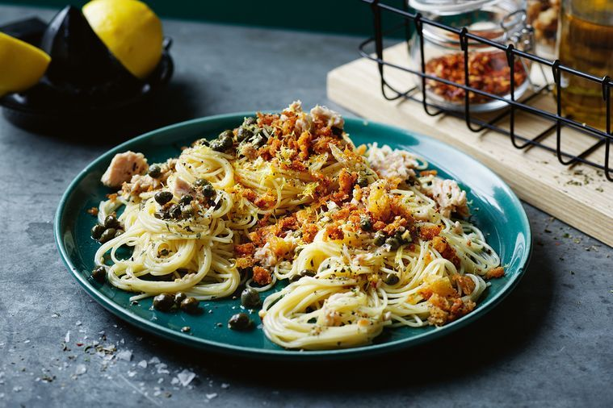
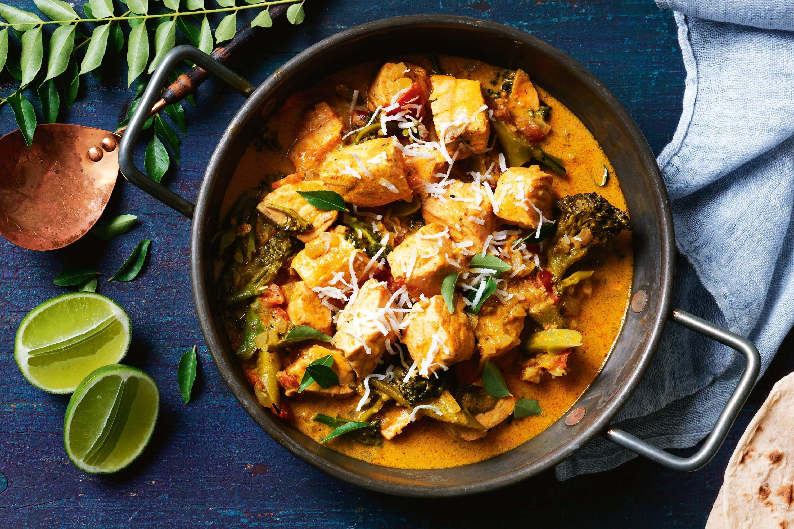

150ml extra virgin olive oil
1 cup (70g) coarse day-old breadcrumbs
2 tsp dried Italian herbs
2 garlic cloves, finely chopped
2 tsp fennel seeds
1/3 cup (65g) capers in vinegar, drained
1/2 tsp chilli flakes
3 x 95g cans good-quality tuna in oil
Finely grated zest & juice of 1 1/2 lemons, or more to taste
300g angel hair pasta, cooked to packet instructions
METHOD
step.1
Heat half the oil in a non-stick frypan over medium heat.
Add breadcrumbs and dried herbs.
Cook, stirring, for 4-5 minutes until crisp and golden.
Transfer to a bowl and set aside.
Wipe pan clean and return to medium heat.
Add remaining 75ml oil then add garlic and fennel seeds.
Cook, stirring, for 2-3 minutes until fragrant and garlic has softened.
Add capers, chilli flakes, tuna and tuna oil, lemon zest and juice, and stir for 1 minute to heat through.
srep.2
Stir pasta through the sauce and season. Scatter with crispy breadcrumbs.

Sri lankan salmon curry
INGREDIENTS
2 garlic clovesb
3cm piece ginger, sliced
2 tsp each panch phoran & whole coriander seeds
1 tbs mild madras curry powder
2 small green chillies, chopped
2 tbs sunflower oil
1 onion, chopped
4 tomatoes, chopped
10 curry leaves
1 bunch broccolini
270ml can coconut milk
600g skinless salmon fillets, cut into 3cm pieces
Shredded coconut, lime wedges, chutney & warmed roti, to serve
METHOD
step.1
To make the curry paste, place the garlic, ginger, spices and chilli in a mortar and pestle and grind to a paste.
Set aside.
step.2
Heat oil in a saucepan over medium heat.
Add onion and cook for 3-4 minutes until softened.
Add the curry paste and cook, stirring, for 2 minutes or until fragrant.
Add the tomato, curry leaves and broccolini, then cook for a further 2 minutes.
Add the coconut milk and 1/2 cup (125ml) water, then bring to a simmer.
step.3
Add the salmon, season and cook for a final 5 minutes or until the salmon is just cooked.
step.4
Garnish the curry with shredded coconut and serve immediately with lime wedges, chutney and warmed roti.

Quick tomato and salami pizzas
INGREDIENTS
2 Lebanese breads
1/3 cup (90g) basil pesto
2 x 150g buffalo mozzarella balls, torn
1 tsp dried chilli flakes
1 long green chilli, thinly sliced
10 slices hot salami
250g mixed cherry tomatoes, some halved
1/3 cup (40g) pitted green olives
Basil leaves, to serve
Extra virgin olive oil, to serve
METHOD
step.1
Preheat the oven to 250°C. Place breads on a large baking tray or individual trays.
Spread pesto evenly over each bread, then top with mozzarella, dried chilli,
green chilli, salami, tomatoes, and olives.
Bake for 8 minutes or until base is crisp and cheese has melted.
step.2
Season with black pepper, drizzle with olive oil and top with basil to serve.